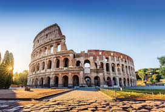
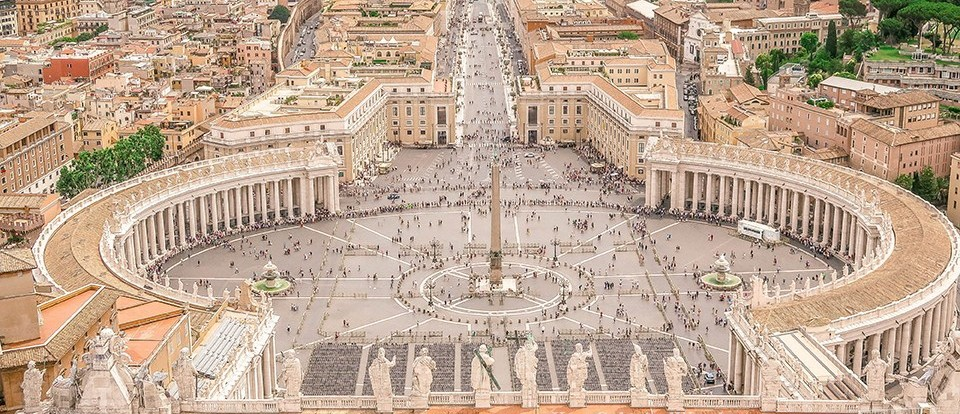
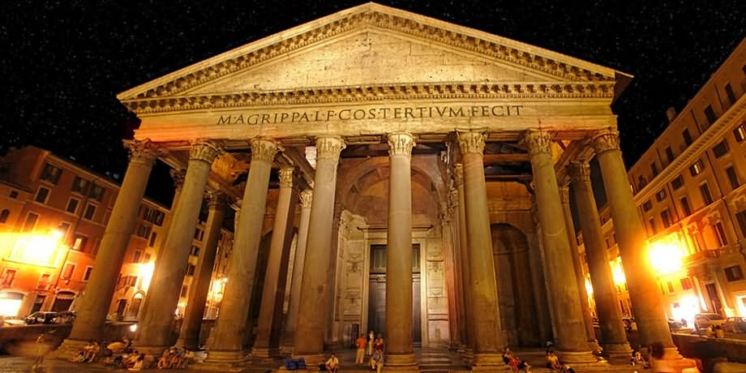
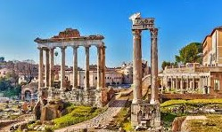
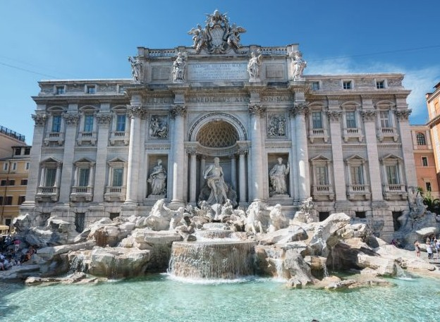
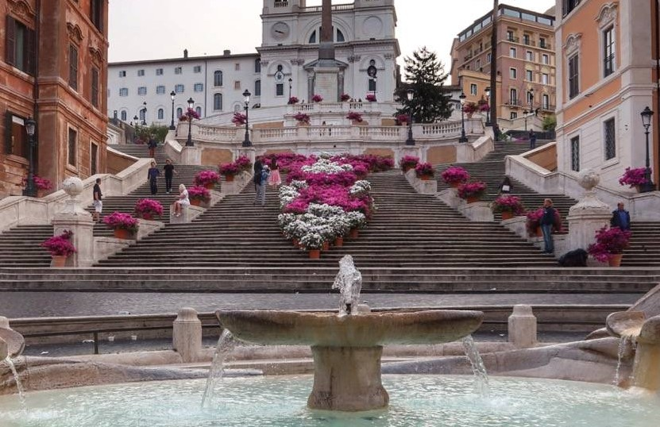
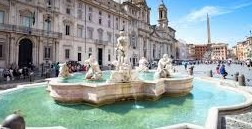

HTML Valid
CSS Valid
HTML Valid
CSS Valid
Rome is a city built from the legacy of one of the greatest empires ever to rule on the face of this planet. It is filled with so many ruins left behind by the smartest engineers and architects of that time. With so many different options to choose from, its hard to decide where to go first. There are many places to visit when in Rome and the choices range from crystal-clear water beaches to ruins that date back hundreds of centuries. Here is a table with the seven of the top rated tourist attractions in Rome.
| Name | Description | Picture |
|---|---|---|
| The Colosseum | We’ve all heard of the colosseum before. It is the largest structure left behind by the roman empire. The building’s construction began in AD 72 with the work on tens of thousands of slaves. The Colosseum was used for performances, festivals, circuses, or games all open to the public. The events that took place were brutal, sometimes nearly 10,000 animals were killed in a day. Almost two-thirds of the colosseum has been destroyed over time, because of vandalism, earthquakes and fires. |  |
| Vatican City | The Vatican city is the smallest country in the world. What’s even more unique about it is that it is situated in the heart of the city and is enclosed by the Vatican walls. In it is the Vatican palace and gardens, St. Peter's Basilica, and St. Peter's Square. This small country is also home to numerous world class museums and galleries |  |
| The Pantheon | The Pantheon is by far the best preserved monument of the ancient Romans and has been intact for more than 2000 years. The pantheon was first built to honour the roman gods, but was later converted into a church. The most fascinating feat of architectural ingenuity in the Pantheon is its dome. It was the largest in the world for over 1300 years, and still is the largest unsupported dome. In front of the Pantheon is the beautiful “Fountain of the Pantheon”. |  |
| The Roman Forum | When walking through the Forum is like stepping back 2000 years back into the heart of Ancient Rome. Even if the forum has only a fraction of its beauty left, it still showcases roman architectural ingenuity. The ancient Romans had their political and religious life centered here. They also had courts, markets, and meeting places situated here. |  |
| Trevi Fountain | The Trevi Fountain is one of the city’s most popular tourist destinations. Built in the 17th century, this fountain has been shown in many movies. Throwing a coin into the fountain (Fontana di Trevi) is a tradition that is supposed to assure you that you will return to Rome. |  |
| The Spanish Steps | The spanish steps are an irregular stairs that lead up to the French church of Trinità dei Monti. The stairs take their name from Piazza di Spagna, the plaza in which they are in. The stairs have been a favorite place for tourists, where they sit and enjoy the view. |  |
| Piazza Novana | Piazza Navona is one of the most famous squares of Rome. It was built by Emperor Domitian in the middle ages, it was used for festivals and horse races in the middle ages. Today, the square is filled with Romans, tourists, street artists, souvenir kiosks, cafés, and during December, one of Rome's best Christmas markets. |  |